Extensions to CAM
7. Slab Ocean Model¶
The Slab Ocean Model (SOM) configuration enables a simple but tightly coupled ocean modeling component combined with a thermodynamic sea ice component based on the CCSM3 sea ice model. This configuration of the atmospheric model allows for a fully-interactive treatment of surface exchange processes in the CAM5.0. The ocean prognostic variable is the mixed layer temperature
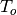
, while the thermodynamic sea ice model treats snow depth, surface temperature, ice thickness, ice fractional coverage, and internal energy at four layers for a single thickness category. The ocean mixed layer contains an internal heat source (also called a flux), whose values are generally
specified by a CAM control run, representing seasonal deep water
exchange and horizontal ocean heat transport. For example, using
prescribed sea surface temperatures and sea ice distributions, the net
surface energy flux over the ocean surface can be evaluated to yield the
heat source . Additional exchange of heat occurs between the
ocean mixed layer and the sea ice model during ice formation and ice
melt. To ensure the CAM5.0 SOM sea ice simulation compares well to the observed
ice distribution, and to moderate sea ice changes in climate change
experiments, the flux term is adjusted under the ice in a
globally conserving manner.
(also called a flux), whose values are generally
specified by a CAM control run, representing seasonal deep water
exchange and horizontal ocean heat transport. For example, using
prescribed sea surface temperatures and sea ice distributions, the net
surface energy flux over the ocean surface can be evaluated to yield the
heat source . Additional exchange of heat occurs between the
ocean mixed layer and the sea ice model during ice formation and ice
melt. To ensure the CAM5.0 SOM sea ice simulation compares well to the observed
ice distribution, and to moderate sea ice changes in climate change
experiments, the flux term is adjusted under the ice in a
globally conserving manner.
7.1. Open Ocean Component¶
The general formulation for the open ocean slab model is taken from
Hansen et al. (1984), although we have modified it to allow for a
fractional sea ice coverage. The governing equation for ocean mixed
layer temperature  is:
is:
(1)
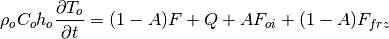
where is the ocean mixed layer temperature,  is the density of ocean water,
is the density of ocean water,  is the heat capacity of ocean
water,
is the heat capacity of ocean
water,  is the annual mean ocean mixed layer depth (m),
is the annual mean ocean mixed layer depth (m),
 is the fraction of the ocean covered by sea ice,
is the fraction of the ocean covered by sea ice,  is
the net atmosphere to ocean heat flux (Wm:math:^{-2}), is
the internal ocean mixed layer heat flux (Wm:math:^{-2}), simulating
deep water heat exchange and ocean transport,
is
the net atmosphere to ocean heat flux (Wm:math:^{-2}), is
the internal ocean mixed layer heat flux (Wm:math:^{-2}), simulating
deep water heat exchange and ocean transport,  is the heat
exchanged with the sea ice (Wm:math:^{-2}) (including solar radiation
transmitted through the ice) and
is the heat
exchanged with the sea ice (Wm:math:^{-2}) (including solar radiation
transmitted through the ice) and  is the heat gained when
sea ice grows over open water (Wm:math:^{-2}). and
are constants (see Table [table:somconst] for values of the
constants), and the nomenclature is such that all right-hand-side fluxes
are positive down.
is the heat gained when
sea ice grows over open water (Wm:math:^{-2}). and
are constants (see Table [table:somconst] for values of the
constants), and the nomenclature is such that all right-hand-side fluxes
are positive down.
| Temperatures |
|---|
 |
| Ocean |
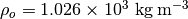 |
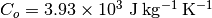 |
| Ice |
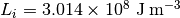 |
Table: [table:somconst]Constants for the Slab Ocean Model
The geographic structure of ocean mixed layer depth is
specified from Levitus (1982). Monthly mean mixed layer depths are
determined using this dataset’s standard measure of salinity
 (
(
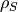
is the density of sea water for a specified salinity, temperature, and atmospheric pressure) where the equality (surface) = .125 is satisfied
on a grid. These data are then averaged to the standard CAM5.0 grid
(all data falling within a CAM5.0 grid box are equally weighted), horizontally
smoothed 10 times using a 1-2-1 smoother, and capped at 200m (to prevent
excessively long adjustment times in coupled atmosphere ocean
experiments). The resulting mixed layer depths in the tropics are
generally shallow (10m-30m) while at high latitudes in both hemispheres
there are large seasonal variations (from 10m up to the 200m maximum).
The annually-averaged geographically-varying mixed layer depth, which is
used for purposes related to energy conservation, is produced by
averaging the monthly mean values.
(surface) = .125 is satisfied
on a grid. These data are then averaged to the standard CAM5.0 grid
(all data falling within a CAM5.0 grid box are equally weighted), horizontally
smoothed 10 times using a 1-2-1 smoother, and capped at 200m (to prevent
excessively long adjustment times in coupled atmosphere ocean
experiments). The resulting mixed layer depths in the tropics are
generally shallow (10m-30m) while at high latitudes in both hemispheres
there are large seasonal variations (from 10m up to the 200m maximum).
The annually-averaged geographically-varying mixed layer depth, which is
used for purposes related to energy conservation, is produced by
averaging the monthly mean values.
The geographic distribution of the internal heat source is
generally specified on a monthly basis using a control CAM5.0 integration as
described below. During a SOM numerical integration is
linearly interpolated between monthly values (taken as mid month) to the
appropriate model time step. The energy fluxes associated with ice
formation and ice melt ( and
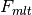
respectively) are explicitly predicted.The net atmosphere-to-ocean heat flux in the absence of sea ice,
, is defined as:
(2)
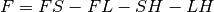
where
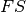
is the net solar flux absorbed by the ocean mixed layer,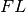
is the net longwave energy flux of the ocean surface to the atmosphere,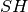
is the sensible heat flux from the ocean to the atmosphere, and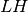
is the latent heat flux from the ocean to the atmosphere. The surface temperature used in evaluating these fluxes is.
The evolution of the mixed-layer temperature field, , is
evaluated using an explicit forward time step. At iteration n the
required information to advance the forecast include  , and
, and
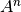
, where is time invariant and
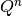
is linearly interpolated in time between prescribed mid-monthly values. It is assumed that the exchange between the ocean mixed layer and the atmosphere occurs faster than deep adjustments. Hence, the first adjustment to is evaluated as:
(3)
where  is the model time step. We note that
is computed from the fraction of the total CAM5.0 grid box that is not covered
by land, since only ocean and sea ice covered portion of the grid cell
are considered for the SOM configuration:
is the model time step. We note that
is computed from the fraction of the total CAM5.0 grid box that is not covered
by land, since only ocean and sea ice covered portion of the grid cell
are considered for the SOM configuration:
(4)
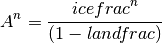
where  is the fraction of ice in the CAM5.0 grid cell and
is the fraction of ice in the CAM5.0 grid cell and
 is the fraction of land in the CAM5.0 grid box.
is the fraction of land in the CAM5.0 grid box.
The flux is then adjusted since it is possible (using
monthly specified values of ) to introduce a non-physical
cooling of the mixed layer when its temperature is at the freezing
point. Therefore, if
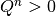
and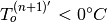
, then(5)
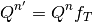
where
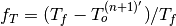
, and is the
ocean freezing temperature of -1.8:math:^circC (where
is expressed in units of
is the
ocean freezing temperature of -1.8:math:^circC (where
is expressed in units of  C). This adjustment smoothly
reduces the loss of heat from the mixed layer (if any) to zero as its
temperature approaches the specified freezing point of sea water.
C). This adjustment smoothly
reduces the loss of heat from the mixed layer (if any) to zero as its
temperature approaches the specified freezing point of sea water.
To ensure that the predicted SOM sea ice distribution compares favorably
with the control simulation, and is bounded against unchecked growth or
loss for atmospheric conditions significantly different from present
day, an additional adjustment to under sea ice is applied:
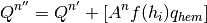
where
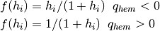
 is the local ice thickness, and
is the local ice thickness, and  is a tuning
constant which may have different values for the Northern and Southern
hemispheres. The coefficient ensures this adjustment only
occurs under sea ice covered ocean. The function
is a tuning
constant which may have different values for the Northern and Southern
hemispheres. The coefficient ensures this adjustment only
occurs under sea ice covered ocean. The function  is
empirical, and is designed to ensure that the hemispheric adjustments
asymptote properly for very small and very large values of ice
thickness. For present-day climate simulations the values of
which yield good control sea ice distributions are
+15
is
empirical, and is designed to ensure that the hemispheric adjustments
asymptote properly for very small and very large values of ice
thickness. For present-day climate simulations the values of
which yield good control sea ice distributions are
+15
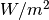
and -10:math:W/m^2 for the Northern and Southern hemispheres respectively.The adjusted  (
( ) is then used to update all
ocean points due to deep ocean heat exchange and transport as:
) is then used to update all
ocean points due to deep ocean heat exchange and transport as:

where
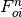
is the energy flux associated with any ice melt and shortwave radiation transmitted through the sea ice from the previous time step.The quantity
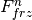
is nonzero only if the temperature of the slab ocean falls below the freezing point: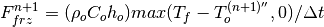
If  is nonzero, new ice forms over the ice-free
portion of the grid cell and
is nonzero, new ice forms over the ice-free
portion of the grid cell and  is returned to the
freezing temperature:
is returned to the
freezing temperature:

A renormalization is necessary to ensure energy is conserved when
is adjusted as described above. We distinguish warm ocean as
those points for which
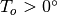
C. An adjustment for warm ocean points is computed after all modifications to are
completed. Let 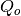
be the original unadjusted, and let
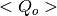
be the global (area weighted) mean. The final (total) applied to warm ocean points is:
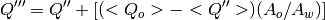
where  is the global area over all ocean, and
is the global area over all ocean, and  the
corresponding area over warm ocean. Taking the global mean of the
bracketed quantity (which is zero over non-warm oceans) results in a
multiplicative factor
the
corresponding area over warm ocean. Taking the global mean of the
bracketed quantity (which is zero over non-warm oceans) results in a
multiplicative factor
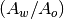
. Thus, , satisfying global energy conservation of for every time step.
In practice, the bracket term adjustment is applied to warm ocean points
after the Q redistribution is completed.
7.2. Thermodynamic Sea Ice Model¶
After the slab ocean component computes the atmosphere-ocean heat fluxes
and updates and , the thermodynamic sea ice
model takes the latter two variables as input and computes the
atmosphere-ice and ocean-ice heat fluxes and advances the state of the
sea ice, including snow depth, surface temperature, ice thickness, ice
fractional coverage, and internal energy profile in the ice. The physics
of the sea ice component model in CAM5.0 are discussed in detail in the next
chapter.
7.3. Evaluation of the Ocean Flux¶
The ocean flux is generally evaluated using a CAM5.0 control
simulation driven by prescribed sea surface temperature and sea ice
distributions. Let
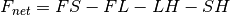
over ocean (regardless of whether the ocean surface is open or ice covered), for each of 12 ensemble mean months (n=1,...,12). The Q flux distribution for each month n is then evaluated: (note that here we use the CAM5.0 sign convention on the Q flux).

where:
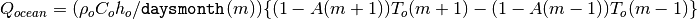

where is the number of days in each month,
 is the latent heat of fusion for ice, and is the
regionally specified ice thickness. We then define an annual average
using the monthly mean data:
is the latent heat of fusion for ice, and is the
regionally specified ice thickness. We then define an annual average
using the monthly mean data:
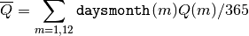
By definition
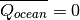
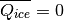
so that
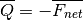
Since
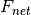
is the monthly mean flux into the ocean directly from the control, must be constrained to ensure that the
actual applied in the SOM configuration has the same annual
mean as 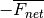
. Otherwise, the application of the flux would introduce a source or sink of heat with respect to
the control.
The actual applied in the SOM configuration is based on linear
interpolation between monthly means, taken as midpoints. Since the
months have different lengths, in general the annual mean of the
flux applied to the SOM will not equal
. Thus, we must define another annual mean,
based on the time interpolated , to ensure that the SOM applied
Q has the identical annual mean as the fluxes from the
control run.